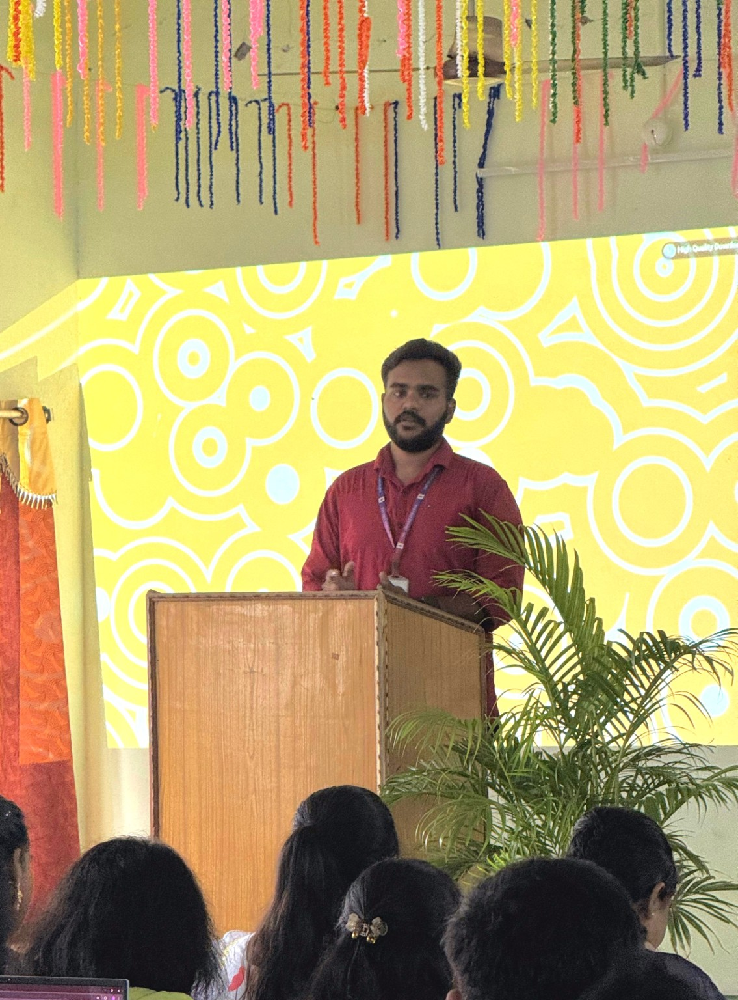

GET TO KNOW ME
About Me

I'm Naga Aravind
I am an MCA student at Vignan University, Tenali, with a background in Computer Science. I enjoy creating practical web projects and exploring AI-powered solutions for students.
My interests include web development, AI tools, project building, hackathons and technology-based problem solving. I believe in learning by building and turning ideas into working applications.
Full NameNaga Aravind
Date of BirthJuly 23, 2004
LocationTenali, Andhra Pradesh
StatusMCA Student